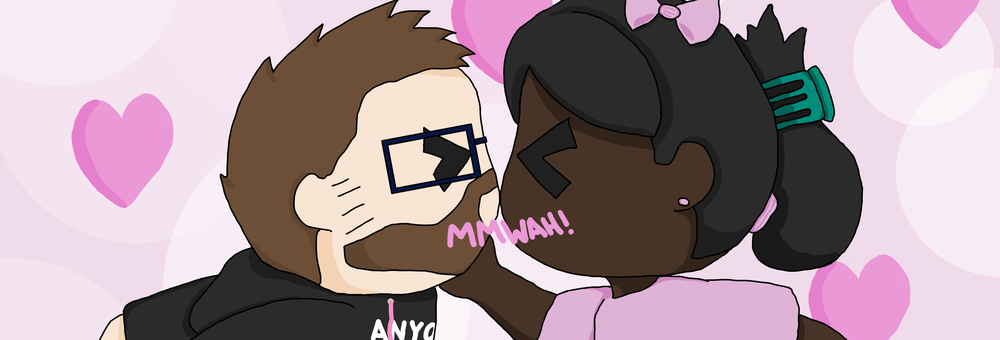
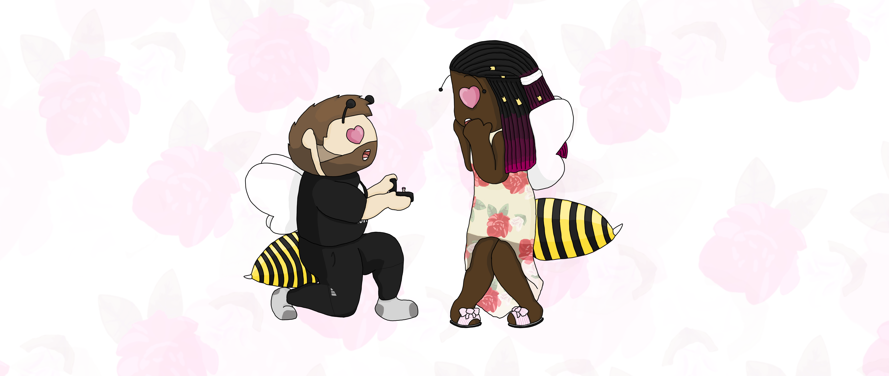

A Series Of Coincidences... Or Fate?
Friday, August 23rd, 2019. After a few months of taking a break from dating Mateen, on a whim, installs the Plenty of Fish app again, feeling the urge to take another look and see who's out there. He looks through some profiles and decides to expand his search this time, including profiles from Toronto. He comes across a couple that interest him, including an anime nerd from Brampton. "Ugh... Toronto..." he thinks to himself, before deciding this girl was cute, had shared interests, and had good values based on her bio. He sends her a message. No cheesy pick up lines, he just asks if she attended Fan Expo, where he'd been earlier that day.
Mateen picks up his phone again on Saturday. "Yeah... time to delete this thing again" he tells himself. He had cast only a few lines, but gotten no bites. Phone in hand, he gets distracted, starts to feel lazy about going through the process to delete his account, and decides, "naaa... I'll do it tomorrow".
It's Sunday, August 25th now. Mateen is sitting at his computer desk, and suuddenly gotten the strong urge to finally delete the app and his account. "Okay, this is it", he tells himself. He picks the phone up to delete POF and... curious... a message. The cute girl from Toronto, Sasha (who would soon correct him that Brampton is, in fact, not Toronto), had replied. He felt like he should at least be polite and message back, waiting for it to fail organically before being done with it.
When Does It Crash And Burn?
Messages flow between Sasha and Mateen. They talk daily. They have deep conversations, and share light hearted jokes. They talk about their favourite things, share some personal memories. Talk about goals, plans, and values. Mateen keeps waiting for the moment where it all goes bad, his cynicism nurtured by bad experiences.
Meanwhile Sasha continues taking the lead and pushing the budding interest between them forward. They move off POF and message on Instagram instead at her request. Eventually they share Facebook accounts and message on there too. Then Snapchat. Messages on every platform. She asks to play 21 Questions so that they get to know each other better. He's still waiting for the hammer to drop, not allowing himself to feel optimism about this incredible person who was so interested in getting to know him. She was becoming more and more intrigued by this cute boy sending thoughtful messages and offering genuine conversation.
Finally, she asks him to meet in person, on a date. Schedules are tough because Mateen has a busy month, but they make it work and meet at Boston Pizza in Brampton. It was the only opportunity to meet before he went away for a while to visit his brother in Calgary.
The day of the first meeting arrives and Mateen is getting ready. Something tells him to wear a tie. It's an odd feeling; never had he worn a tie before on a first date, but it almost felt like something compelled him to do so. He grabs his tie and a dress shirt. What's the point of a gut if you don't listen to it?
He arrives at Boston Pizza before Sasha, so he paces and waits. Shortly after she too arrives and sees the cute boy she'd been talking to online standing there, in a tie, and thinks to herself, "Oh wow he looks so snazzy!". She steps out of the car to greet him and he's shocked... she looked way better than her pictures in person, and she was gorgeous in her pictures.
They head inside and sit down. A strange request is made. Her mom wants to talk to him on the phone before the date starts. He feels a bit weird about it, but this girl was worth it and he appreciated a protective parent, so he agreed. The call goes well and the date begins. She orders noodles, he orders pizza. She talks a mile a minute about any and everything, going off on tangents and then tangents to those tangents, and he stares at her lovestruck, taking it all in. The perfect prologue to their relationship.
A Lovesick Puppy
Before the first date ended they already decided to meet again. Once he gets home, Mateen messages everybody. How on earth did he find somebody this amazing, and why the heck was she interested in him?! It didn't matter, he was too happy, too excited. It would hurt when this one crashed and burned, he knew.
But it never crashed, and never burned. Dates continued to come. He trusted her to take him down a weird murder path behind a restaurant, and she didn't feel weirded out holding his hand. He knocked an item off the bucket list by taking her hand after a date and surprising her by giving it a kiss... but she misunderstood his intentions and really made it hard for him. They kept talking every day. When Sasha needed help with homework, Mateen drove to Brampton after work to help her until midnight every time.
Soon enough he started sleeping over, then more often, then spent most of his time there. They woke up together in the morning and he would take her to work before driving to Burlington for his own job, then he would come back after to see her again. When he had to be in Hamilton, he left the house at 6am so that he could pick her up and take her to work when she didn't have a ride, all to spare her the cost of an Uber.
He was in love. So was she. He said it out loud first, she giggled and said thanks. He found out later that she had been telling her friend she loved him before he'd even said it, which he continues to tease her with to this day. She eventually told him later before a date to Ripley's Aquarium that she loved him too. Overjoyed, Mateen bought her one of the biggest stuffed animals at their gift shop, Wally the Narwhal, another item checked off the bucket list.
The relationship becomes official in December, months after everyone considered them a couple. She has a major surgery and Mateen takes a few days off work to take her to the hospital and take care of her while she recovers. Afterwards they continue spending nearly all their time together, and she would always ask him to stay longer when it was time to leave. He gave in most of the time and barely saw his own family, which they definitely teased him for. Eventually she would come with him whenever he went back home to Hamilton, and he would go with her when she went back home to Brampton. They were living together without really living together, and neither could be happier.
With all this time spent together, all these feelings he'd never known before, Mateen knew that this was it, she was the one. They had spoken of marriage, and of him proposing. Sasha had already picked out the ring. They were planning to move in together in September officially when she went back to college, but he wanted to pop the question beforehand. He needed a plan though, something to make this special and unique to them. He wanted her to have a keepsake to remember it by, something she said she wanted. He started planning a few months in advance, asking Sasha each day to tell him some things she loved about herself.
He Better Propose At The End Of This...
The weeks passed and the list grew. Everything was in place. He bought a journal, pink of course to suit her tastes, and began working in secret while she was asleep. He had 100 reasons to love Sasha, according to Sasha herself, and handwrote them into the journal, interspersing them with pictures to celebrate their first year in each other's lives. This was it, he knew, this was how he would do it.
July 31st, 2020. Today is the day. Tomorrow their families were meeting, so he would do it tonight. He hides the ring, hides the book. He had already coordinated what she would be wearing and knew a few days in advance. It was part of the last surprise. He brings out the finished book and sits with her as she reads it. The tears flow freely, emotions growing stronger with each turn of the page. She thinks to herself, "he better propose to me at the end of this". Oh, he will, don't you worry.
Finally she gets to the last page, and the last surprise. It was a picture he had drawn of the two of them, perfectly coordinated with the outfits they were wearing in that exact moment, every detail perfect, from her hair to her slippers. In the picture Mateen is proposing to the girl he could never have even dreamt of finding, the love of his life and the person he wants to grow old with. She's bawling as he slips out the ring and gets down on one knee in front of her, choking up and barely able to get the words out...
Will you marry me...?
